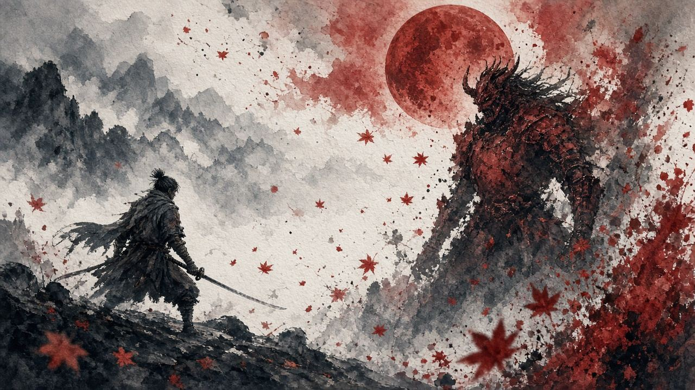
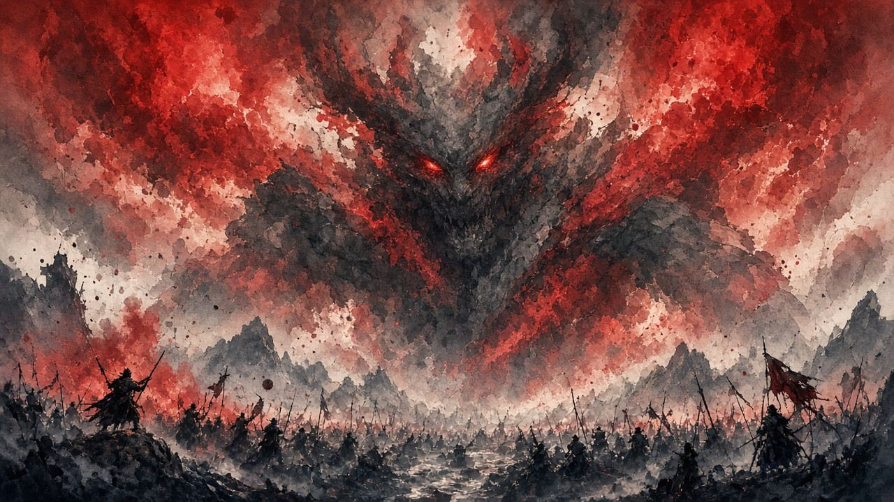

觀猴（紫）· Seeing Monkey
視力強
弱點：視力極強，亮處難近身；黑暗／熄燭後可潛入。
開燈火堂門 → 吹熄燭火／把牠引進黑暗房 → 背後忍殺。唔好喺亮堂硬衝。
899–1481s（14:59–24:41）· 1SNd5R5TWYw @ 14:59 → · YT chapter「Folding Screen Monkeys」· VERIFIED · 合集窗・非特寫


本頁＝幻廊四猴解謎戰卡。入場路徑與不死斬線重疊；此處只鎖「怎麼進幻廊」，完整取得線見 如何得到不死斬。
四猴散在幻廊各室。場內另有幻廊之鈴（重置用，見 #prep）。全滅後自動送奧の院方向（不死斬線續）。
這場幾乎唔使裝義手招式。核心工具＝場內幻廊之鈴。
一猴一卡。四卡短片＝同一合集窗 899–1481（YT chapter「Folding Screen Monkeys」· VERIFIED · 合集窗・非特寫）；逐猴微章特寫另刀 scrub。打法以文字步驟為準。
弱點：視力極強，亮處難近身；黑暗／熄燭後可潛入。
開燈火堂門 → 吹熄燭火／把牠引進黑暗房 → 背後忍殺。唔好喺亮堂硬衝。
899–1481s（14:59–24:41）· 1SNd5R5TWYw @ 14:59 → · YT chapter「Folding Screen Monkeys」· VERIFIED · 合集窗・非特寫
弱點：聽力極強；可用鐘聲硬直，或噪音區掩護接近。
追至耳鳴鐘 → 敲鐘趁硬直忍殺。可選：轟鳴堂頂落殺（噪音掩護）。
899–1481s（14:59–24:41）· 1SNd5R5TWYw @ 14:59 → · YT chapter「Folding Screen Monkeys」· VERIFIED · 合集窗・非特寫
弱點：感官唔強，但被發現會吵嚷連坐，引其他猴。
潛行背後忍殺。勿硬追、勿正面硬砍；被發現就搖鈴重置再潛。
899–1481s（14:59–24:41）· 1SNd5R5TWYw @ 14:59 → · YT chapter「Folding Screen Monkeys」· VERIFIED · 合集窗・非特寫
弱點：隱形；靠黃腳印／腳步聲定位。多數人只清三色就卡喺呢隻。
三選一（可混用）：①入場後轉身砍（常喺身後）②搖鈴重置後到重生點身後砍 ③跟黃腳印／腳步聲砍。
899–1481s（14:59–24:41）· 1SNd5R5TWYw @ 14:59 → · YT chapter「Folding Screen Monkeys」· VERIFIED · 合集窗・非特寫
順序無硬性規定。言猴宜早清免連坐；隱猴可留到最後用鈴＋腳印收尾。
1SNd5R5TWYw 899–1481（14:59–24:41）· YT chapter「Folding Screen Monkeys」· VERIFIED · 合集窗・非特寫。逐猴微章特寫另刀 scrub，本頁不估細秒。玩家社群整理導覽，非遊戲官方。別人改數值，你改規則。
步驟唔清楚、想加邊隻猴示範、有錯漏——丢句說話。留言經 Netlify Forms 直達網主信箱／後台，唔再只係本機保存。
你嘅意見已送出俾網主。想再講可以繼續填。